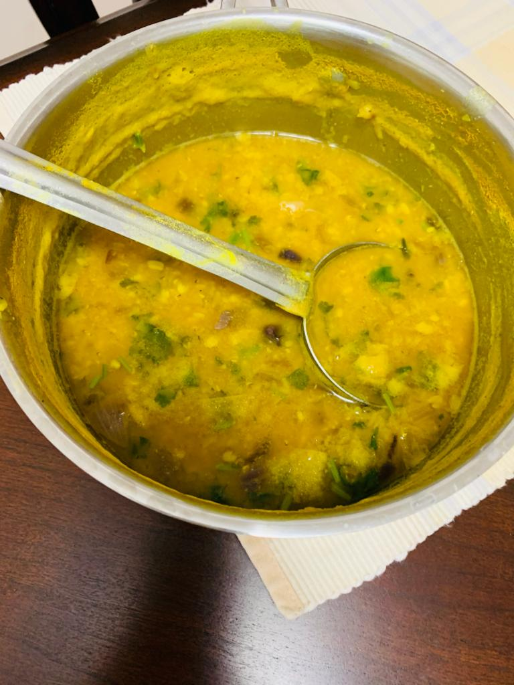

Kadhi Daal

Description
This a healthy dish from India made with Moong and Masoor daal.
Ingredients
- Half cup peele/moong daal.
- Half cup masoor daal.
- 8 cup water.
- One small Onion chopped.
- Cilantro chopped.
- Garam masala two spoons.
- Half spoon red mirchi powder
- One spoon Salt.
- One spoon Haldi.
- Two spoons of oil
Steps
- Clean the dal with water.
- Put the daal in the kadhai and water and let it come to a boil under medium heat.
- Add Salt and haldi to the daal while it starts to heat up.
- Sauté the onions in the oil until golden brown.
- Add garam masala and mirchi powder and cook for half minute.
- Add cilantro in the end.
- Once the daal is done in about 30 mins add the sauté mixture to it.
- Your Daal is ready to be served.